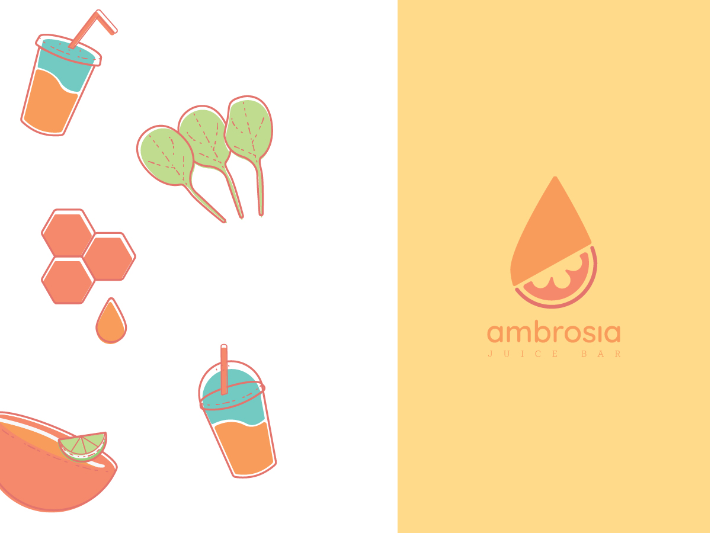
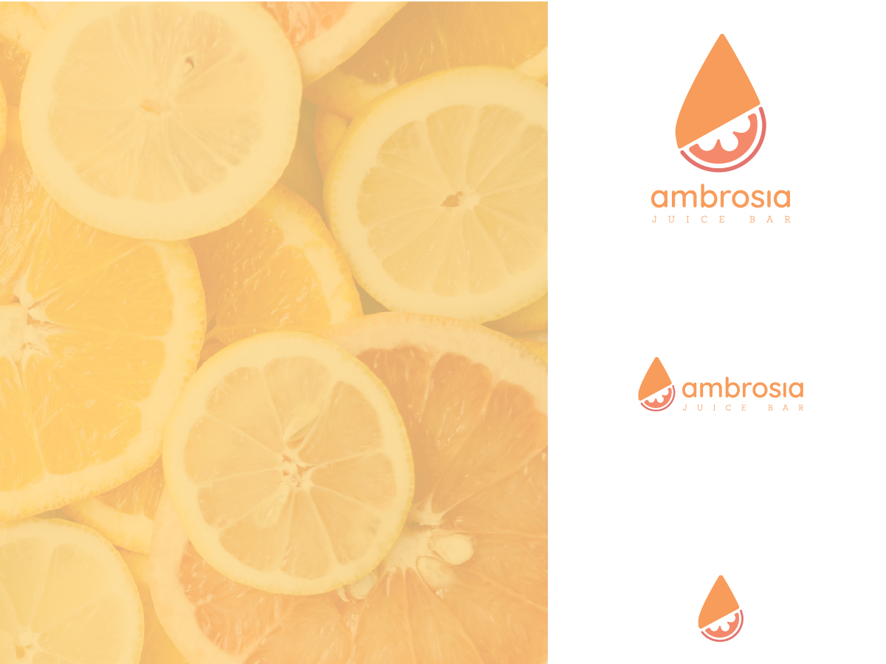
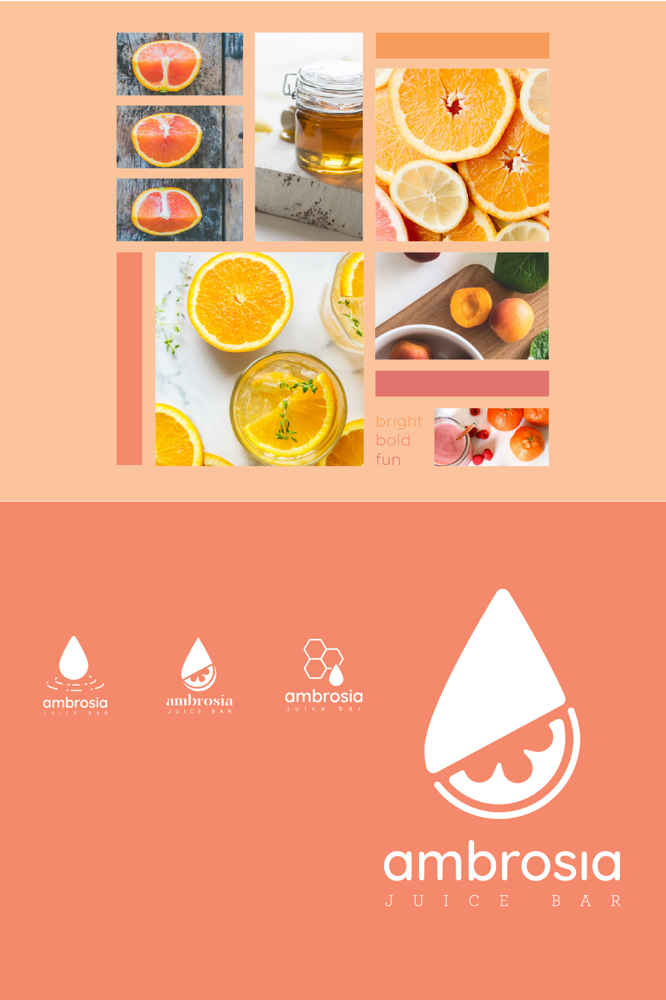
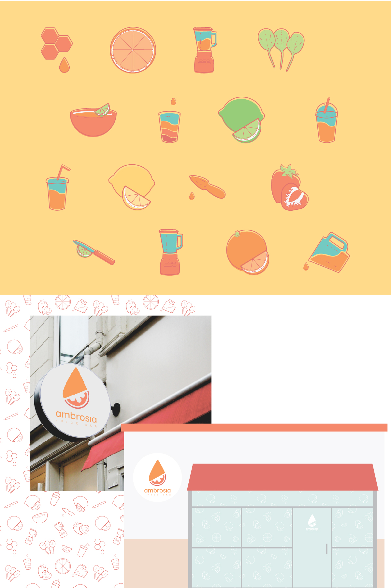
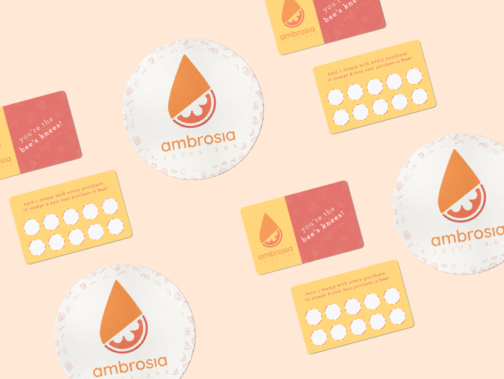
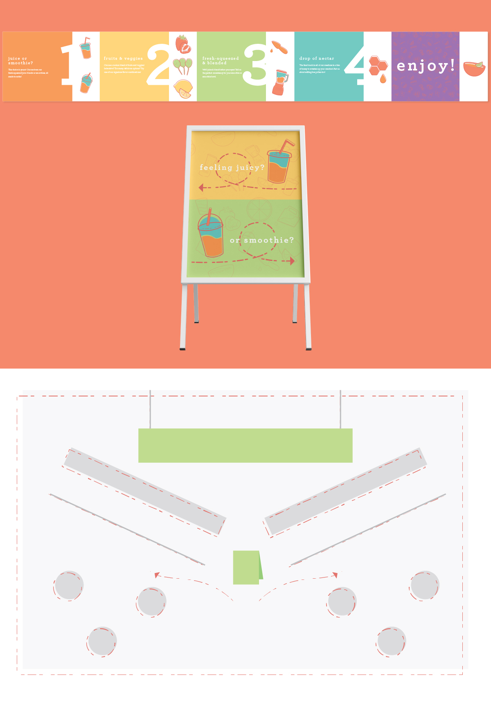
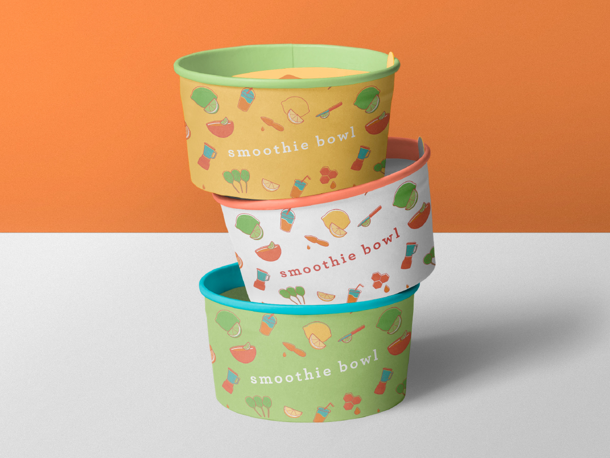
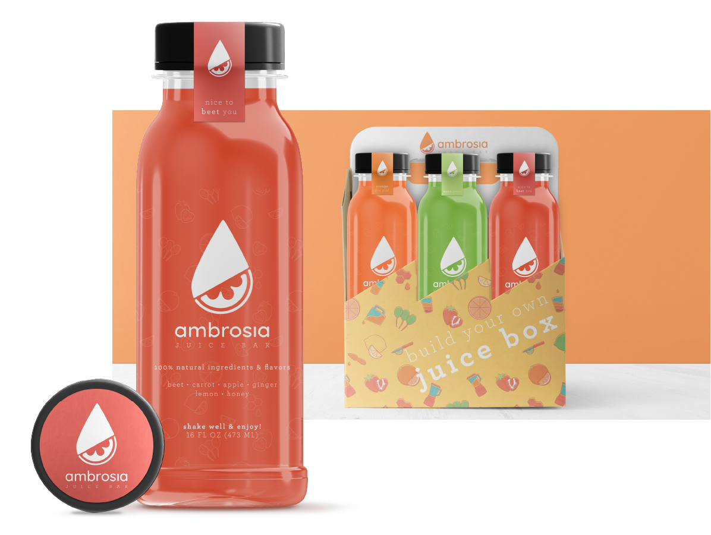

Problem
Ambrosia was created as a juice bar that supports its local community. It needed to be branded with a full identity system that could be applied in a variety of ways.
Solution
I reworked my design solution, revisiting some original concepts and making refinements to create a new identity: Ambrosia Juice Bar. I felt the name and concept lent itself to a juice bar retail setting, and this would allow me to branch into aspects of branding and identity.
Process
I wanted to refresh my own work and give it new life. I defined a market, a juice and smoothie retail location, and the look and feel I wanted to create with the new logo as bright, bold, and fun; the shapes are bold, the colors are bright, and the overall feel is modern but fun.
When I revisited this project, I went back to early iterations. I felt some of them had promise, and began expanding and reworking those. With a successful logo configured, I expanded it into a full identity system, including color palette, typography, graphic elements, and an icon set.
The icon set was a really exciting part of the brand I had in mind. I wanted to create a cohesive icon set that could then be used as graphic elements, wayfinding, and packaging design.
Result
The brand system worked across many different types of materials, internal and external. The icon set was used in a variety of ways including wayfinding systems, packaging design, and as graphic elements. The identity was applied to location signage, packaging, loyalty programs, and promotional materials, creating a cohesive brand experience throughout the customer journey.
I used the icon set in a variety of ways, because I wanted it to really feel integrated in the identity. One of the ways I utilized it was as part of a wayfinding system that would occur inside the establishment, including directional sandwich boards and order process signage.
Another way I used the developed icon set was as patterning for packaging. It was important to utilize the icons in a variety of ways, so they felt embedded into the branding identity. This included pre-bottled juice blends, along with made-to-order juices and smoothies.







